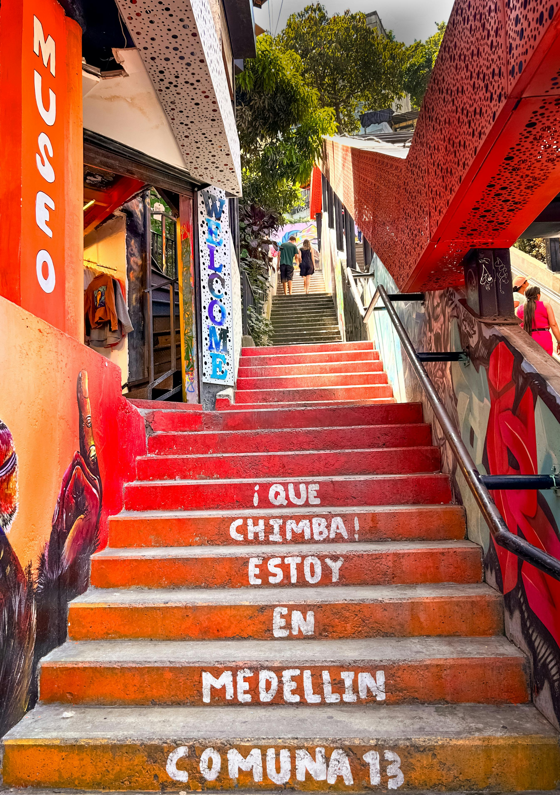
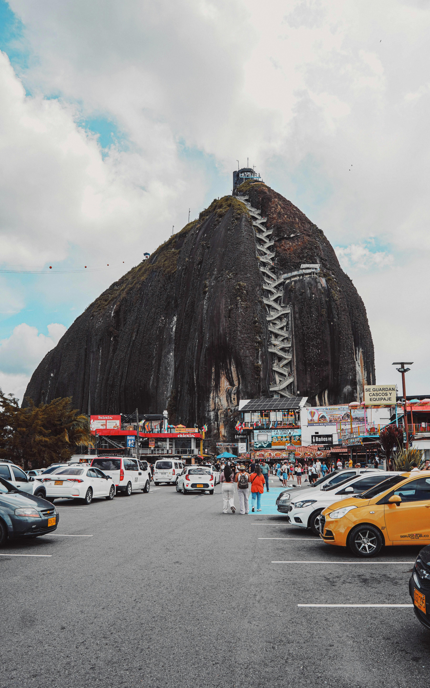
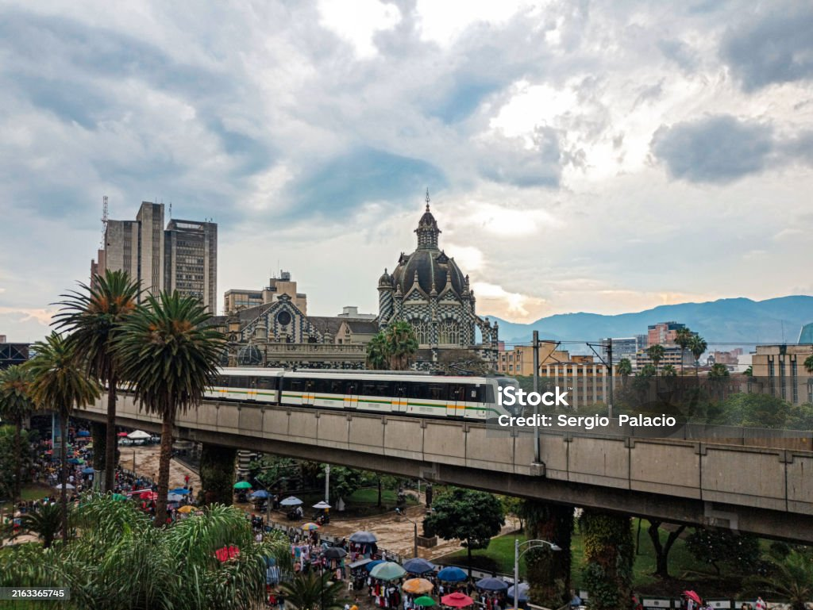
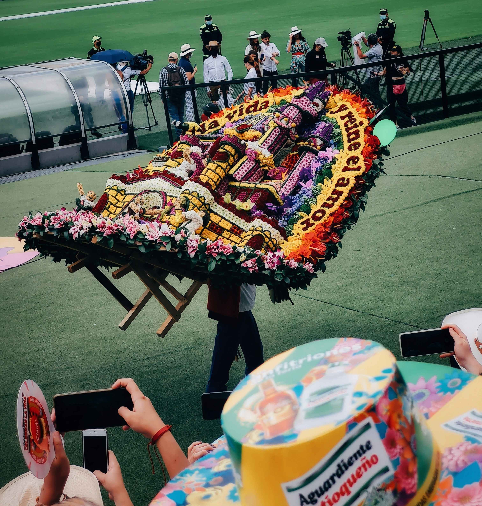

Medellin is a beautiful city
Medellín is a city that stands out as one of the main financial, industrial, commercial and service centers of Colombia.

Point of interest

It is a tourist spot that has been transformed
from a violent area into an artistic and colorful space.

Today, Guatapé is one of the most traditional and
important tourist destinations in Antioquia, with attractions in
religious tourism, agrotourism, ecotourism and adventure sports.

The Medellín Metro is a sustainable transport
system that has several special characteristics, such as its
contribution to reducing inequality and decreasing pollution.

The Flower Fair It was in 1968 that it began to be
celebrated in the month of August to commemorate the Battle of
Boyacá and the Independence of Antioquia.
"It is the second largest city in Colombia and its
commercial and industrial activities have been highlighted
at a national level. Here you can also enjoy culture and
entertainment in places such as: The Botanical Garden.
Different parks both on a metropolitan scale and at a
neighborhood level.""
-"Thanks for reading"
Call to action! it's time!
!Sign up for our tour by clicking right here!